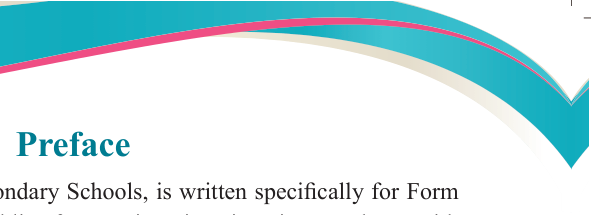
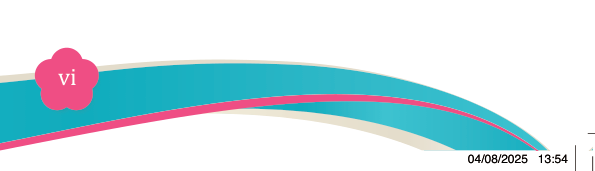

Fine Art for Secondary Schools

vi

Student’s Book Form Two
Preface
This textbook, Fine Art for Secondary Schools, is written specifically for Form
Two students in the United Republic of Tanzania. It is written in accordance with
the 2023 Fine Art Syllabus for Ordinary Secondary Education, Form I–IV, issued
by the Ministry of Education, Science and Technology (MoEST). It is a revised
edition of Fine Art for Secondary Schools Student’s Book for Form Two that was
published in 2023 in accordance with the 2005 syllabus issued by the then, Ministry
of Education and Vocational Training (MoEVT).
The book consists of five chapters, namely; Theories of Art, Still life composition,
Simple functional drawing, Simple functional painting, and Simple functional
monoprints. Each chapter contains text, activities, scenarios, illustrations, and
exercises. You are encouraged to do all the activities and exercises as well as other assignments provided by your teacher. You are also required to prepare a portfolio for keeping records for activities performed in different lessons. Doing so will enable you to develop the intended competencies.
Additional learning resources are available at the TIE e-library https://ol.tie.go.tz
or ol.tie.go.tz

Tanzania Institute of Education

04/08/2025 13:54